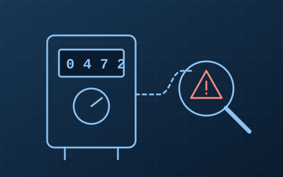

Sistema e Método para Identificação e Quantificação de Perda Não Técnica de Energia Elétrica em Sistemas de Medição de Baixa TensãoSystem and Method for Identifying and Quantifying Non-Technical Electricity Losses in Low-Voltage Metering SystemsSistema y Método para la Identificación y Cuantificación de Pérdidas No Técnicas de Energía Eléctrica en Sistemas de Medición de Baja Tensión
ResumoSummaryResumen
Fraudes e furtos de energia em unidades consumidoras de baixa tensão geram perdas não técnicas, que reduzem a receita das distribuidoras e encarecem a tarifa para todos. A invenção identifica as unidades com indícios de perda não técnica e quantifica a energia não faturada.
Energy fraud and theft at low-voltage consumer units cause non-technical losses, which reduce utilities' revenue and raise tariffs for everyone. The invention identifies units showing signs of non-technical loss and quantifies the unbilled energy.
Los fraudes y hurtos de energía en unidades consumidoras de baja tensión generan pérdidas no técnicas, que reducen los ingresos de las distribuidoras y encarecen la tarifa para todos. La invención identifica las unidades con indicios de pérdida no técnica y cuantifica la energía no facturada.
- Identificação de unidades com indícios de irregularidade
- Quantificação da energia não faturada
- Aplicável a sistemas de medição de baixa tensão
- Apoio à priorização de inspeções em campo
- Identification of units showing signs of irregularity
- Quantification of unbilled energy
- Applicable to low-voltage metering systems
- Support for prioritizing field inspections
- Identificación de unidades con indicios de irregularidad
- Cuantificación de la energía no facturada
- Aplicable a sistemas de medición de baja tensión
- Apoyo a la priorización de inspecciones en campo